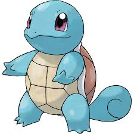

SQUIRTLE

TIPO: GRASS / POISON
HP : 044
ATK : 048
DEF : 065
SATK: 050
SDEF: 050
SPD : 043
TOTAL:300
Pokémon de estágio básico que evolui para Wartortle no level 16. Seu estágio final é o de Blastoise.